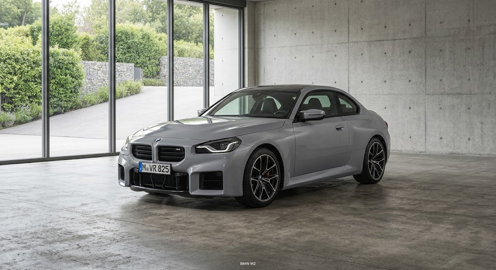
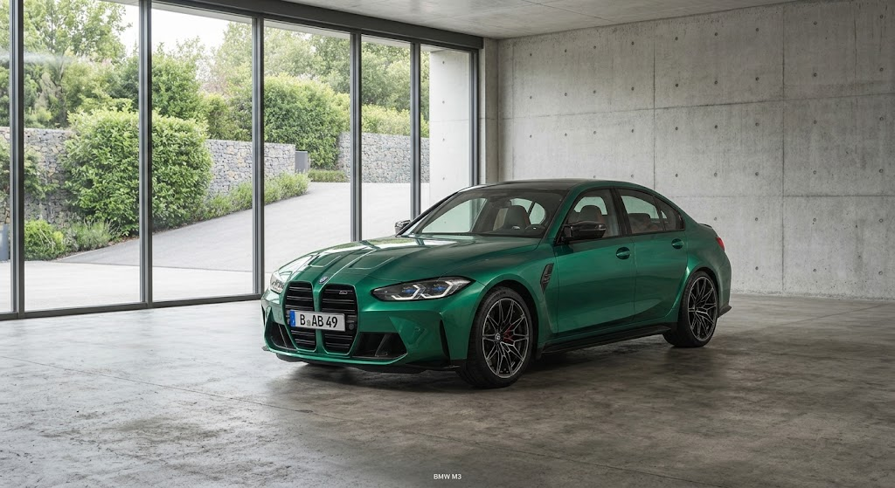
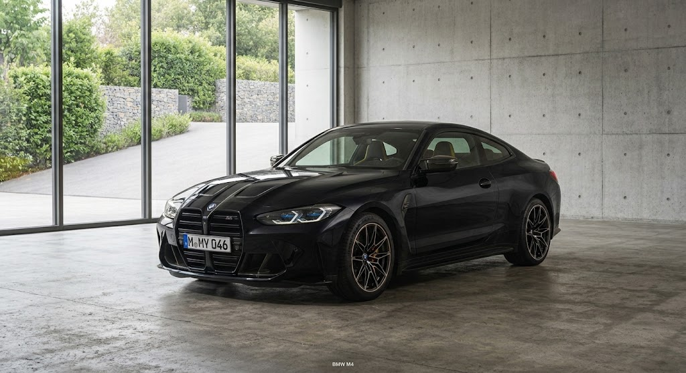
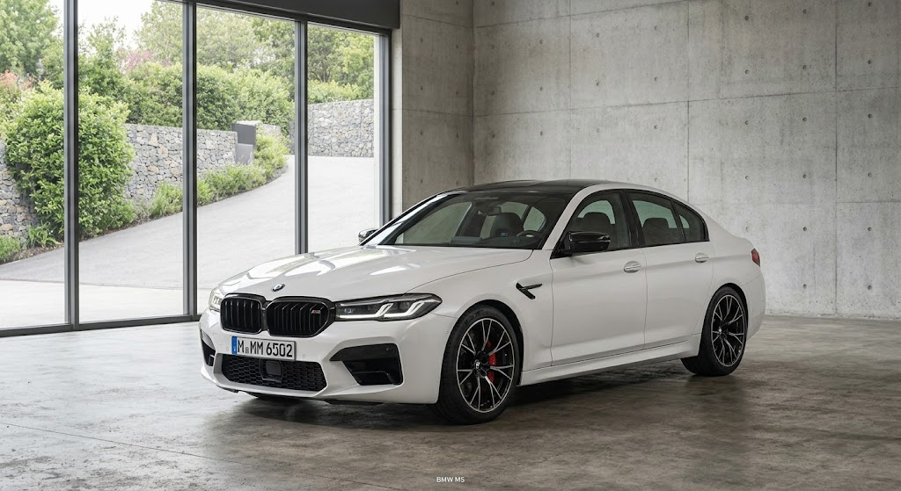
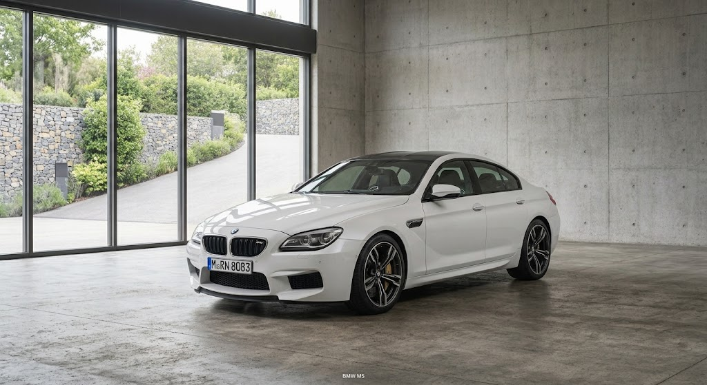
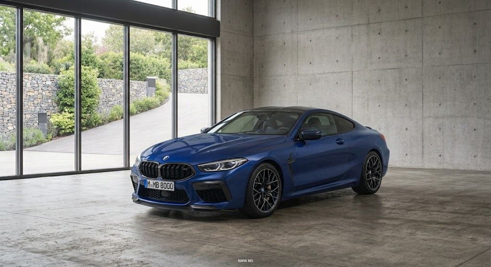
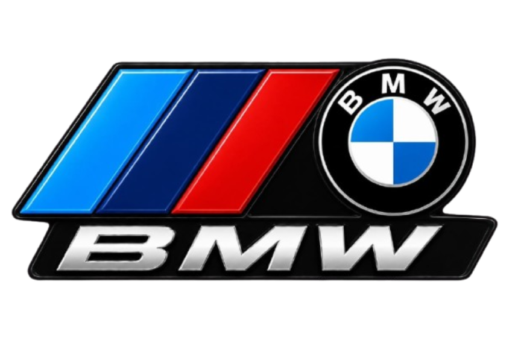

Pura petformance, sem compromissos
Role para descer
Da pista para a estrada. Conheça os modelos que carregam o DNA da M: potência, precisão e um design que não passa despercebido.
BMW M2

BMW M3

BMW M4

BMW M5

BMW M6

BMW M8

Role para descer
Performance de alto nível tem seu preço. Confira os valores dos modelos que levam o DNA da linha M para as ruas.
| Modelo | Lançamento | Preço novo | Preço seminovo | Potência | Motor | 0-100 km/h | Velocidade máxima |
|---|---|---|---|---|---|---|---|
| BMW M2 | 2015 | R$ 650.000 | R$ 520.000 | 460 cv | 3.0 TwinPower Turbo | 4,1 s | 285 km/h |
| BMW M2 Competition | 2018 | R$ 720.000 | R$ 580.000 | 410 cv | 3.0 6 cil. | 4,2 s | 250 km/h |
| BMW M3 | 1986 | R$ 850.000 | R$ 680.000 | 510 cv | 3.0 TwinPower Turbo | 3,9 s | 290 km/h |
| BMW M3 Competition | 2020 | R$ 894.950 | R$ 720.000 | 510 cv | 3.0 6 cil. | 3,9 s | 250 km/h |
| BMW M4 | 2014 | R$ 900.000 | R$ 720.000 | 510 cv | 3.0 TwinPower Turbo | 3,9 s | 290 km/h |
| BMW M4 Competition | 2020 | R$ 908.950 | R$ 750.000 | 510 cv | 3.0 6 cil. | 3,9 s | 250 km/h |
| BMW M5 | 1984 | R$ 1.200.000 | R$ 950.000 | 727 cv | 4.4 V8 TwinPower Turbo | 3,5 s | 305 km/h |
| BMW M5 Competition | 2018 | R$ 1.050.000 | R$ 850.000 | 625 cv | 4.4 V8 | 3,3 s | 305 km/h |
| BMW M6 | 1983 | R$ 1.200.000 | R$ 950.000 | 727 cv | 4.4 V8 TwinPower Turbo | 3,5 s | 305 km/h |
| BMW M6 Competition | 2018 | R$ 1.100.000 | R$ 880.000 | 625 cv | 4.4 V8 | 3,6 s | 305 km/h |
| BMW M8 | 2019 | R$ 1.400.000 | R$ 1.100.000 | 625 cv | 4.4 V8 TwinPower Turbo | 3,2 s | 305 km/h |
| BMW M8 Competition | 2019 | R$ 1.500.000 | R$ 1.200.000 | 625 cv | 4.4 V8 | 3,2 s | 305 km/h |
Role para descer
Conheça a história da BMW M, desde suas origens no automobilismo até a criação dos modelos que se tornaram referência em desempenho, tecnologia e esportividade.

A história da BMW M começou em 1972, quando a BMW criou a BMW Motorsport GmbH, uma divisão dedicada inicialmente ao desenvolvimento de carros de competição. O objetivo era levar para as pistas a tecnologia e o desempenho que mais tarde também seriam utilizados nos carros de rua. Um dos maiores marcos da divisão foi o BMW M1, lançado em 1978. Ele foi o primeiro carro desenvolvido pela BMW Motorsport para uso nas ruas e se tornou um dos modelos mais importantes da história da marca. Em 1984, surgiu o BMW M5, que combinava o conforto de um sedã com o desempenho de um carro esportivo. Dois anos depois, em 1986, a BMW apresentou a primeira geração do BMW M3, modelo que se tornou um dos maiores símbolos da divisão M. Com o passar dos anos, a BMW M continuou desenvolvendo carros cada vez mais potentes e tecnológicos, como M2, M3, M4, M5, M8 e diversas versões Competition. Esses modelos passaram a representar a combinação entre desempenho, tecnologia, design e dirigibilidade. Atualmente, a linha BMW M continua sendo uma das principais representantes do desempenho da BMW, levando para as ruas tecnologias e características inspiradas no automobilismo. “M” representa mais do que potência: representa a experiência da BMW Motorsport nas ruas.